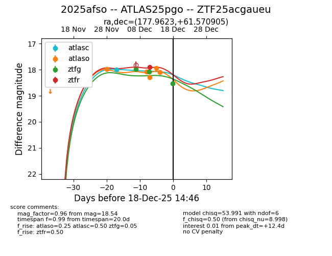
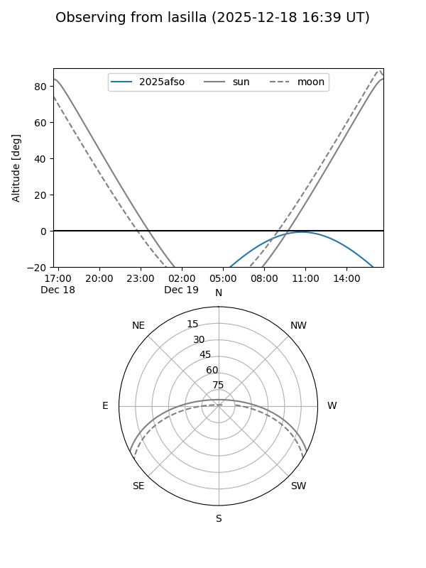
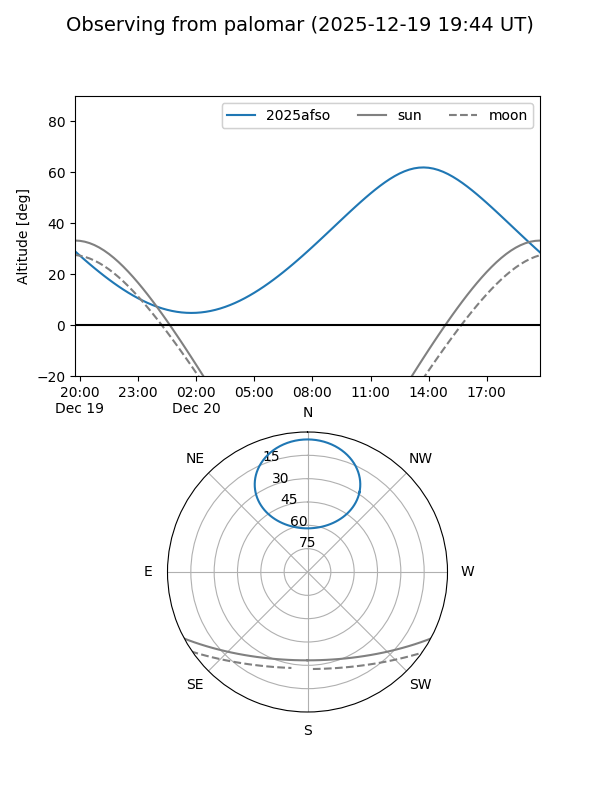
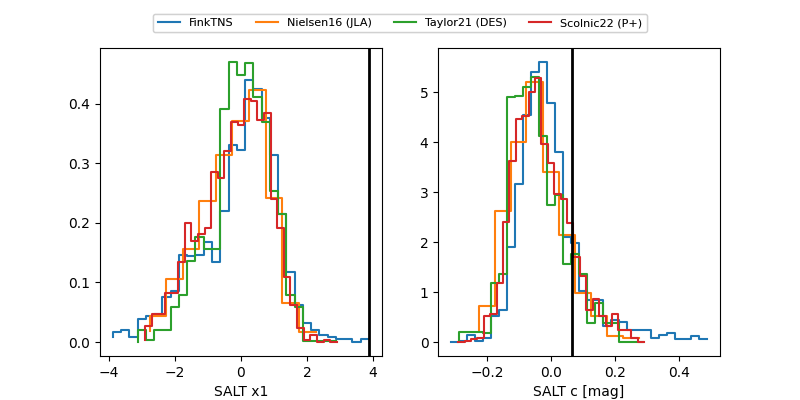

2025afso
Target 2025afso at 2025-12-31 18:00
Aliases and brokers:
FINK: link
Lasair: link
ALeRCE: link
TNS: link
YSE: link
alt names
ZTF25acgaueu (ztf,fink_ztf)
2025afso (tns,yse)
ATLAS25pgo (atlas)
Coordinates:
equatorial (ra, dec) = 177.9623,+61.57091
equatorial (HMS+DMS) = 11:51:50.96,+61:34:15.26
galactic (l, b) = (134.9914,+54.14009)
Flags:
Photometry:
last atlasc=18.00, atlaso=18.09, ztfg=18.92, ztfr=18.34
1 atlasc, 5 atlaso, 5 ztfg, 3 ztfr detections
Lightcurve

Visibility


Additional plots
